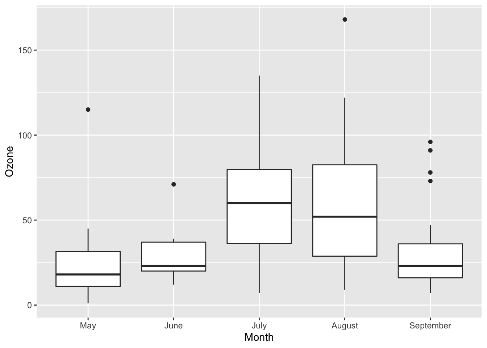
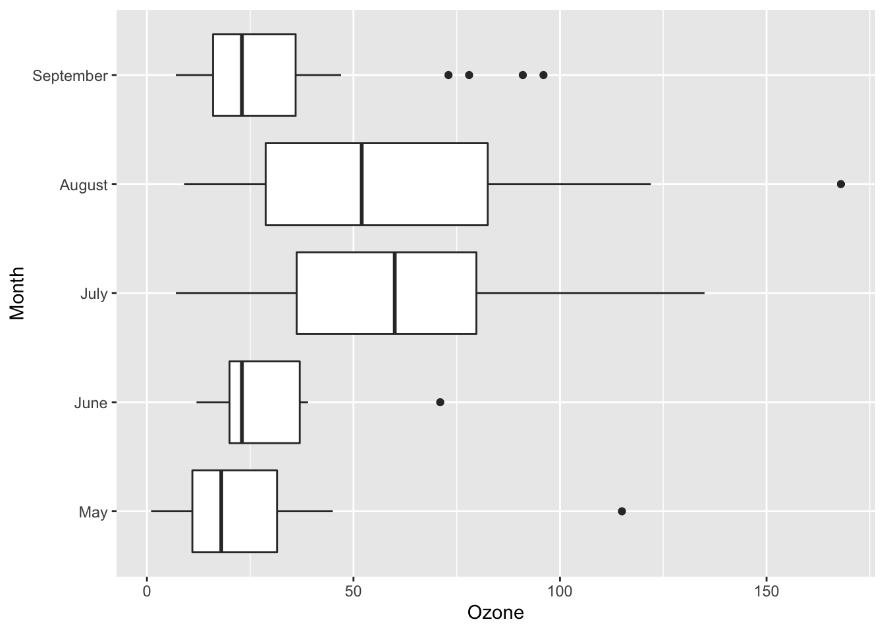
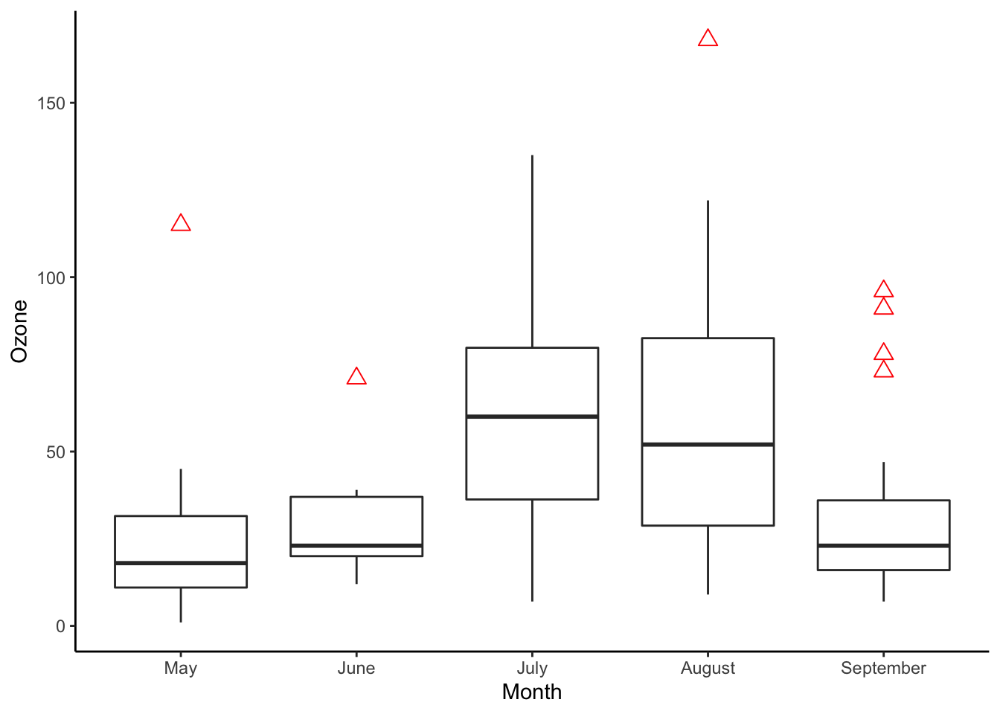
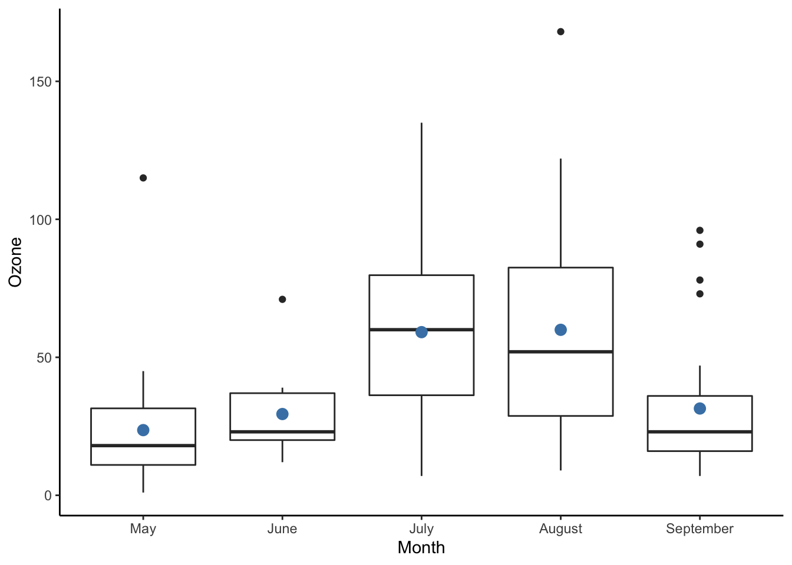
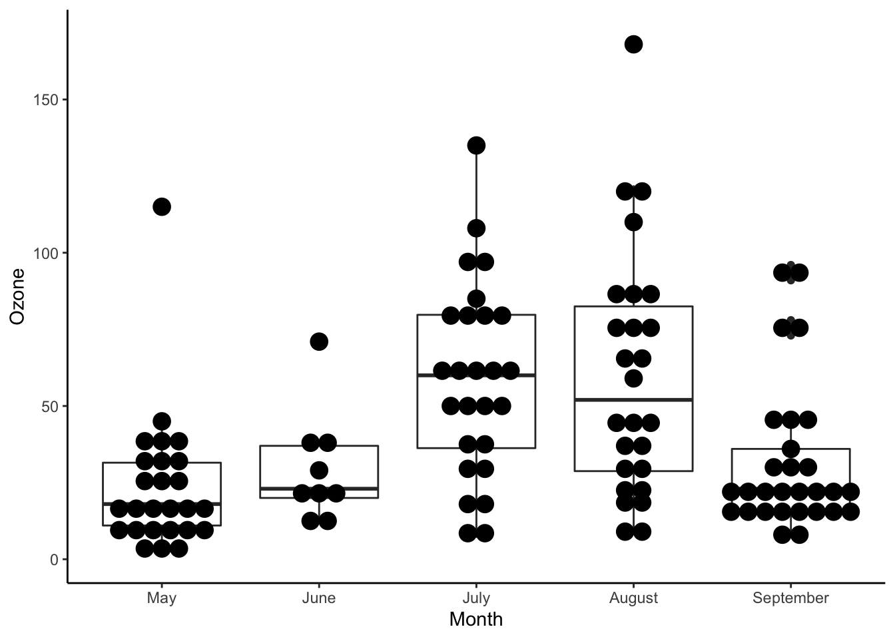
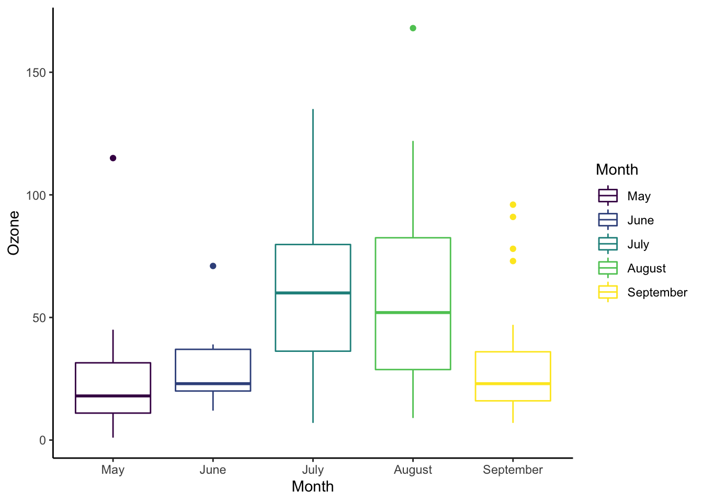
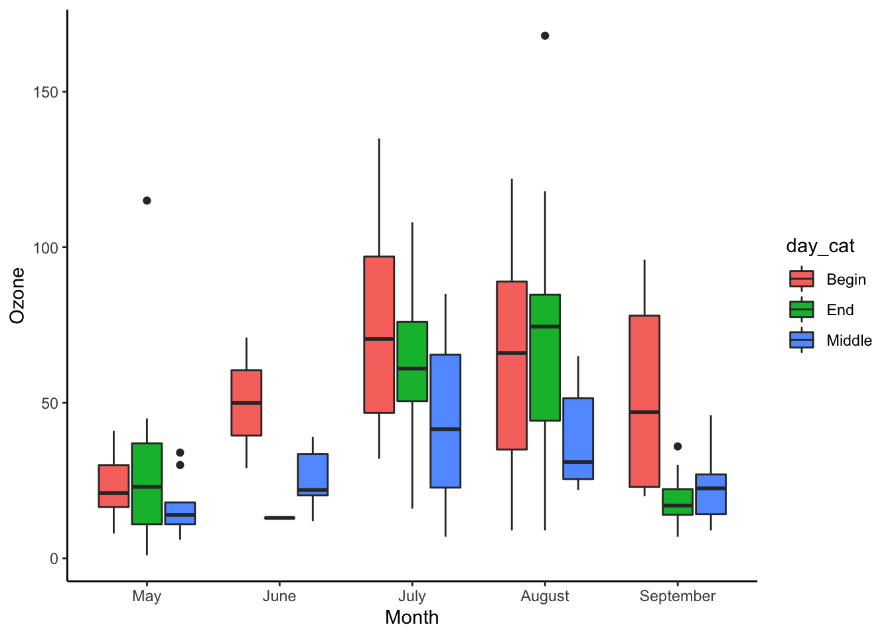
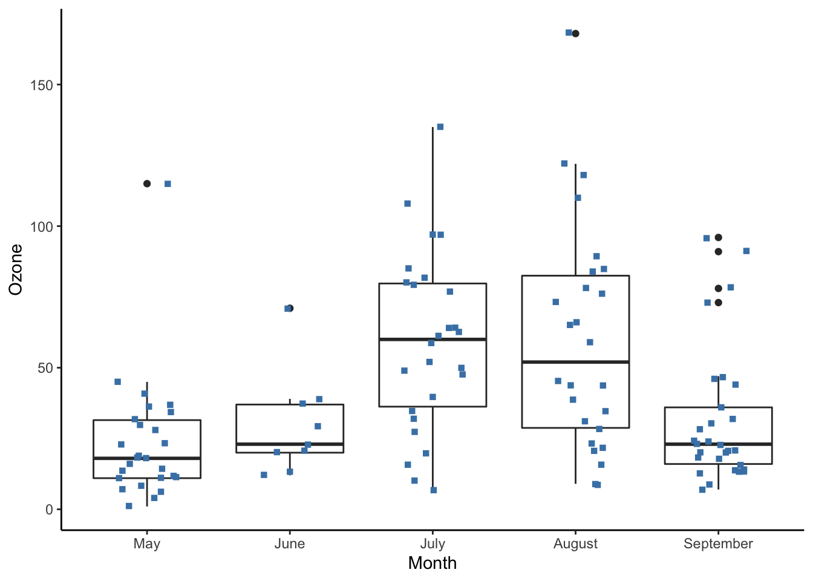
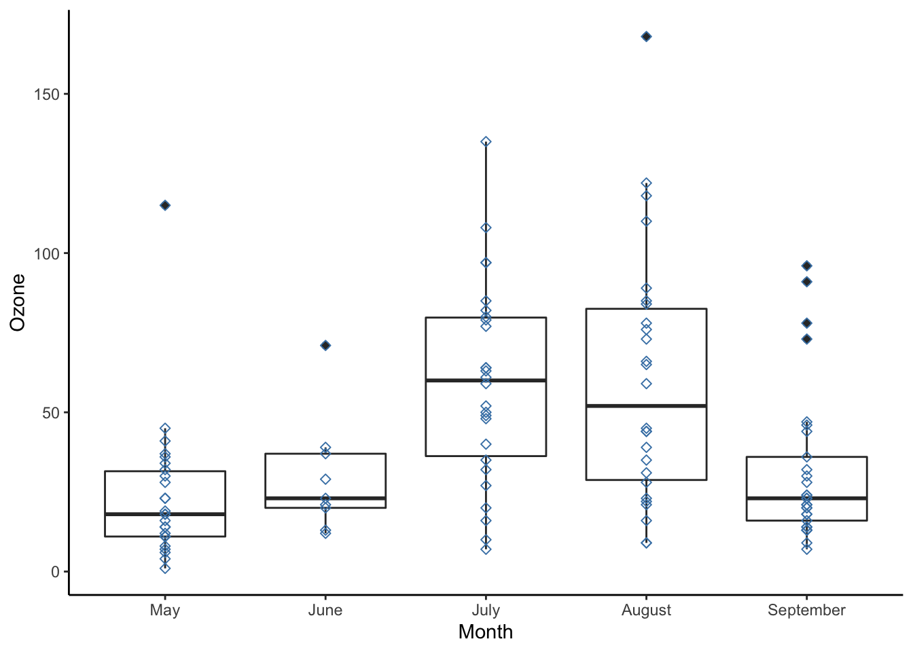
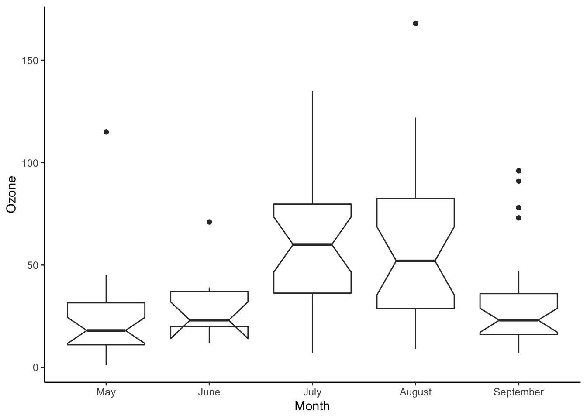

<!DOCTYPE html>

<html>

<head>

<meta charset="utf-8" />
<meta name="generator" content="pandoc" />
<meta http-equiv="X-UA-Compatible" content="IE=EDGE" />


<title>Lesson 19</title>

<script src="site_libs/jquery-1.11.3/jquery.min.js"></script>
<meta name="viewport" content="width=device-width, initial-scale=1" />
<link href="site_libs/bootstrap-3.3.5/css/flatly.min.css" rel="stylesheet" />
<script src="site_libs/bootstrap-3.3.5/js/bootstrap.min.js"></script>
<script src="site_libs/bootstrap-3.3.5/shim/html5shiv.min.js"></script>
<script src="site_libs/bootstrap-3.3.5/shim/respond.min.js"></script>
<script src="site_libs/jqueryui-1.11.4/jquery-ui.min.js"></script>
<link href="site_libs/tocify-1.9.1/jquery.tocify.css" rel="stylesheet" />
<script src="site_libs/tocify-1.9.1/jquery.tocify.js"></script>
<script src="site_libs/navigation-1.1/tabsets.js"></script>
<script src="site_libs/accessible-code-block-0.0.1/empty-anchor.js"></script>
<script src="site_libs/kePrint-0.0.1/kePrint.js"></script>
<link href="site_libs/lightable-0.0.1/lightable.css" rel="stylesheet" />
<link href="site_libs/font-awesome-5.1.0/css/all.css" rel="stylesheet" />
<link href="site_libs/font-awesome-5.1.0/css/v4-shims.css" rel="stylesheet" />
<!DOCTYPE html PUBLIC "-//W3C//DTD HTML 4.01//EN" "http://www.w3.org/TR/html4/strict.dtd">
<html>
<head>
  <meta http-equiv="Content-Type" content="text/html; charset=utf-8">
  <meta http-equiv="Content-Style-Type" content="text/css">
  <title></title>
  <meta name="Generator" content="Cocoa HTML Writer">
  <meta name="CocoaVersion" content="1504">
  <!-- this script changes the anchor position -->
  <!-- http://jsfiddle.net/ianclark001/rkocah23/ -->
<script>
(function(document, history, location) {
  var HISTORY_SUPPORT = !!(history && history.pushState);

  var anchorScrolls = {
    ANCHOR_REGEX: /^#[^ ]+$/,
    OFFSET_HEIGHT_PX: 65,

    /**
     * Establish events, and fix initial scroll position if a hash is provided.
     */
    init: function() {
      this.scrollToCurrent();
      $(window).on('hashchange', $.proxy(this, 'scrollToCurrent'));
      $('body').on('click', 'a', $.proxy(this, 'delegateAnchors'));
    },

    /**
     * Return the offset amount to deduct from the normal scroll position.
     * Modify as appropriate to allow for dynamic calculations
     */
    getFixedOffset: function() {
      return this.OFFSET_HEIGHT_PX;
    },

    /**
     * If the provided href is an anchor which resolves to an element on the
     * page, scroll to it.
     * @param  {String} href
     * @return {Boolean} - Was the href an anchor.
     */
    scrollIfAnchor: function(href, pushToHistory) {
      var match, anchorOffset;

      if(!this.ANCHOR_REGEX.test(href)) {
        return false;
      }

      match = document.getElementById(href.slice(1));

      if(match) {
        anchorOffset = $(match).offset().top - this.getFixedOffset();
        $('html, body').animate({ scrollTop: anchorOffset});

        // Add the state to history as-per normal anchor links
        if(HISTORY_SUPPORT && pushToHistory) {
          history.pushState({}, document.title, location.pathname + href);
        }
      }

      return !!match;
    },
    
    /**
     * Attempt to scroll to the current location's hash.
     */
    scrollToCurrent: function(e) {
      if(this.scrollIfAnchor(window.location.hash) && e) {
        e.preventDefault();
      }
    },

    /**
     * If the click event's target was an anchor, fix the scroll position.
     */
    delegateAnchors: function(e) {
      var elem = e.target;

      if(this.scrollIfAnchor(elem.getAttribute('href'), true)) {
        e.preventDefault();
      }
    }
  };

    $(document).ready($.proxy(anchorScrolls, 'init'));
})(window.document, window.history, window.location);
</script>

</head>
<body>
</body>
</html>

<style type="text/css">
  code{white-space: pre-wrap;}
  span.smallcaps{font-variant: small-caps;}
  span.underline{text-decoration: underline;}
  div.column{display: inline-block; vertical-align: top; width: 50%;}
  div.hanging-indent{margin-left: 1.5em; text-indent: -1.5em;}
  ul.task-list{list-style: none;}
    </style>


<style type="text/css">code{white-space: pre;}</style>
<style type="text/css" data-origin="pandoc">
code.sourceCode > span { display: inline-block; line-height: 1.25; }
code.sourceCode > span { color: inherit; text-decoration: inherit; }
code.sourceCode > span:empty { height: 1.2em; }
.sourceCode { overflow: visible; }
code.sourceCode { white-space: pre; position: relative; }
div.sourceCode { margin: 1em 0; }
pre.sourceCode { margin: 0; }
@media screen {
div.sourceCode { overflow: auto; }
}
@media print {
code.sourceCode { white-space: pre-wrap; }
code.sourceCode > span { text-indent: -5em; padding-left: 5em; }
}
pre.numberSource code
  { counter-reset: source-line 0; }
pre.numberSource code > span
  { position: relative; left: -4em; counter-increment: source-line; }
pre.numberSource code > span > a:first-child::before
  { content: counter(source-line);
    position: relative; left: -1em; text-align: right; vertical-align: baseline;
    border: none; display: inline-block;
    -webkit-touch-callout: none; -webkit-user-select: none;
    -khtml-user-select: none; -moz-user-select: none;
    -ms-user-select: none; user-select: none;
    padding: 0 4px; width: 4em;
    color: #aaaaaa;
  }
pre.numberSource { margin-left: 3em; border-left: 1px solid #aaaaaa;  padding-left: 4px; }
div.sourceCode
  {   }
@media screen {
code.sourceCode > span > a:first-child::before { text-decoration: underline; }
}
code span.al { color: #ff0000; font-weight: bold; } /* Alert */
code span.an { color: #60a0b0; font-weight: bold; font-style: italic; } /* Annotation */
code span.at { color: #7d9029; } /* Attribute */
code span.bn { color: #40a070; } /* BaseN */
code span.bu { } /* BuiltIn */
code span.cf { color: #007020; font-weight: bold; } /* ControlFlow */
code span.ch { color: #4070a0; } /* Char */
code span.cn { color: #880000; } /* Constant */
code span.co { color: #60a0b0; font-style: italic; } /* Comment */
code span.cv { color: #60a0b0; font-weight: bold; font-style: italic; } /* CommentVar */
code span.do { color: #ba2121; font-style: italic; } /* Documentation */
code span.dt { color: #902000; } /* DataType */
code span.dv { color: #40a070; } /* DecVal */
code span.er { color: #ff0000; font-weight: bold; } /* Error */
code span.ex { } /* Extension */
code span.fl { color: #40a070; } /* Float */
code span.fu { color: #06287e; } /* Function */
code span.im { } /* Import */
code span.in { color: #60a0b0; font-weight: bold; font-style: italic; } /* Information */
code span.kw { color: #007020; font-weight: bold; } /* Keyword */
code span.op { color: #666666; } /* Operator */
code span.ot { color: #007020; } /* Other */
code span.pp { color: #bc7a00; } /* Preprocessor */
code span.sc { color: #4070a0; } /* SpecialChar */
code span.ss { color: #bb6688; } /* SpecialString */
code span.st { color: #4070a0; } /* String */
code span.va { color: #19177c; } /* Variable */
code span.vs { color: #4070a0; } /* VerbatimString */
code span.wa { color: #60a0b0; font-weight: bold; font-style: italic; } /* Warning */

</style>
<script>
// apply pandoc div.sourceCode style to pre.sourceCode instead
(function() {
  var sheets = document.styleSheets;
  for (var i = 0; i < sheets.length; i++) {
    if (sheets[i].ownerNode.dataset["origin"] !== "pandoc") continue;
    try { var rules = sheets[i].cssRules; } catch (e) { continue; }
    for (var j = 0; j < rules.length; j++) {
      var rule = rules[j];
      // check if there is a div.sourceCode rule
      if (rule.type !== rule.STYLE_RULE || rule.selectorText !== "div.sourceCode") continue;
      var style = rule.style.cssText;
      // check if color or background-color is set
      if (rule.style.color === '' && rule.style.backgroundColor === '') continue;
      // replace div.sourceCode by a pre.sourceCode rule
      sheets[i].deleteRule(j);
      sheets[i].insertRule('pre.sourceCode{' + style + '}', j);
    }
  }
})();
</script>
<style type="text/css">
  pre:not([class]) {
    background-color: white;
  }
</style>


<style type="text/css">
h1 {
  font-size: 34px;
}
h1.title {
  font-size: 38px;
}
h2 {
  font-size: 30px;
}
h3 {
  font-size: 24px;
}
h4 {
  font-size: 18px;
}
h5 {
  font-size: 16px;
}
h6 {
  font-size: 12px;
}
.table th:not([align]) {
  text-align: left;
}
</style>


<link rel="stylesheet" href="style.css" type="text/css" />


<style type = "text/css">
.main-container {
  max-width: 940px;
  margin-left: auto;
  margin-right: auto;
}
code {
  color: inherit;
  background-color: rgba(0, 0, 0, 0.04);
}
img {
  max-width:100%;
}
.tabbed-pane {
  padding-top: 12px;
}
.html-widget {
  margin-bottom: 20px;
}
button.code-folding-btn:focus {
  outline: none;
}
summary {
  display: list-item;
}
</style>


<style type="text/css">
/* padding for bootstrap navbar */
body {
  padding-top: 60px;
  padding-bottom: 40px;
}
/* offset scroll position for anchor links (for fixed navbar)  */
.section h1 {
  padding-top: 65px;
  margin-top: -65px;
}
.section h2 {
  padding-top: 65px;
  margin-top: -65px;
}
.section h3 {
  padding-top: 65px;
  margin-top: -65px;
}
.section h4 {
  padding-top: 65px;
  margin-top: -65px;
}
.section h5 {
  padding-top: 65px;
  margin-top: -65px;
}
.section h6 {
  padding-top: 65px;
  margin-top: -65px;
}
.dropdown-submenu {
  position: relative;
}
.dropdown-submenu>.dropdown-menu {
  top: 0;
  left: 100%;
  margin-top: -6px;
  margin-left: -1px;
  border-radius: 0 6px 6px 6px;
}
.dropdown-submenu:hover>.dropdown-menu {
  display: block;
}
.dropdown-submenu>a:after {
  display: block;
  content: " ";
  float: right;
  width: 0;
  height: 0;
  border-color: transparent;
  border-style: solid;
  border-width: 5px 0 5px 5px;
  border-left-color: #cccccc;
  margin-top: 5px;
  margin-right: -10px;
}
.dropdown-submenu:hover>a:after {
  border-left-color: #ffffff;
}
.dropdown-submenu.pull-left {
  float: none;
}
.dropdown-submenu.pull-left>.dropdown-menu {
  left: -100%;
  margin-left: 10px;
  border-radius: 6px 0 6px 6px;
}
</style>

<script>
// manage active state of menu based on current page
$(document).ready(function () {
  // active menu anchor
  href = window.location.pathname
  href = href.substr(href.lastIndexOf('/') + 1)
  if (href === "")
    href = "index.html";
  var menuAnchor = $('a[href="' + href + '"]');

  // mark it active
  menuAnchor.parent().addClass('active');

  // if it's got a parent navbar menu mark it active as well
  menuAnchor.closest('li.dropdown').addClass('active');
});
</script>

<!-- tabsets -->

<style type="text/css">
.tabset-dropdown > .nav-tabs {
  display: inline-table;
  max-height: 500px;
  min-height: 44px;
  overflow-y: auto;
  background: white;
  border: 1px solid #ddd;
  border-radius: 4px;
}

.tabset-dropdown > .nav-tabs > li.active:before {
  content: "";
  font-family: 'Glyphicons Halflings';
  display: inline-block;
  padding: 10px;
  border-right: 1px solid #ddd;
}

.tabset-dropdown > .nav-tabs.nav-tabs-open > li.active:before {
  content: "&#xe258;";
  border: none;
}

.tabset-dropdown > .nav-tabs.nav-tabs-open:before {
  content: "";
  font-family: 'Glyphicons Halflings';
  display: inline-block;
  padding: 10px;
  border-right: 1px solid #ddd;
}

.tabset-dropdown > .nav-tabs > li.active {
  display: block;
}

.tabset-dropdown > .nav-tabs > li > a,
.tabset-dropdown > .nav-tabs > li > a:focus,
.tabset-dropdown > .nav-tabs > li > a:hover {
  border: none;
  display: inline-block;
  border-radius: 4px;
  background-color: transparent;
}

.tabset-dropdown > .nav-tabs.nav-tabs-open > li {
  display: block;
  float: none;
}

.tabset-dropdown > .nav-tabs > li {
  display: none;
}
</style>

<!-- code folding -->


<style type="text/css">

#TOC {
  margin: 25px 0px 20px 0px;
}
@media (max-width: 768px) {
#TOC {
  position: relative;
  width: 100%;
}
}

@media print {
.toc-content {
  /* see https://github.com/w3c/csswg-drafts/issues/4434 */
  float: right;
}
}

.toc-content {
  padding-left: 30px;
  padding-right: 40px;
}

div.main-container {
  max-width: 1200px;
}

div.tocify {
  width: 20%;
  max-width: 260px;
  max-height: 85%;
}

@media (min-width: 768px) and (max-width: 991px) {
  div.tocify {
    width: 25%;
  }
}

@media (max-width: 767px) {
  div.tocify {
    width: 100%;
    max-width: none;
  }
}

.tocify ul, .tocify li {
  line-height: 20px;
}

.tocify-subheader .tocify-item {
  font-size: 0.90em;
}

.tocify .list-group-item {
  border-radius: 0px;
}


</style>


</head>

<body>


<div class="container-fluid main-container">


<!-- setup 3col/9col grid for toc_float and main content  -->
<div class="row-fluid">
<div class="col-xs-12 col-sm-4 col-md-3">
<div id="TOC" class="tocify">
</div>
</div>

<div class="toc-content col-xs-12 col-sm-8 col-md-9">


<div class="navbar navbar-default  navbar-fixed-top" role="navigation">
  <div class="container">
    <div class="navbar-header">
      <button type="button" class="navbar-toggle collapsed" data-toggle="collapse" data-target="#navbar">
        <span class="icon-bar"></span>
        <span class="icon-bar"></span>
        <span class="icon-bar"></span>
      </button>
      <a class="navbar-brand" href="index.html">An R Tutorial for Beginners</a>
    </div>
    <div id="navbar" class="navbar-collapse collapse">
      <ul class="nav navbar-nav">
        <li>
  <a href="index.html">
    <span class="fas fa-home"></span>
     
    Home
  </a>
</li>
<li>
  <a href="about.html">
    <span class="fas fa-info-circle"></span>
     
    About
  </a>
</li>
<li class="dropdown">
  <a href="#" class="dropdown-toggle" data-toggle="dropdown" role="button" aria-expanded="false">
    <span class="fas fa-bars"></span>
     
    Lessons
     
    <span class="caret"></span>
  </a>
  <ul class="dropdown-menu" role="menu">
    <li class="dropdown-submenu">
      <a href="#" class="dropdown-toggle" data-toggle="dropdown" role="button" aria-expanded="false">Introduction</a>
      <ul class="dropdown-menu" role="menu">
        <li>
          <a href="R-course_lesson-1.html">Lesson 1</a>
        </li>
        <li>
          <a href="R-course_lesson-2.html">Lesson 2</a>
        </li>
        <li>
          <a href="R-course_lesson-3.html">Lesson 3</a>
        </li>
        <li>
          <a href="R-course_lesson-4.html">Lesson 4</a>
        </li>
      </ul>
    </li>
    <li class="dropdown-submenu">
      <a href="#" class="dropdown-toggle" data-toggle="dropdown" role="button" aria-expanded="false">Data Preparation</a>
      <ul class="dropdown-menu" role="menu">
        <li>
          <a href="R-course_lesson-5.html">Lesson 5</a>
        </li>
        <li>
          <a href="R-course_lesson-6.html">Lesson 6</a>
        </li>
        <li>
          <a href="R-course_lesson-7.html">Lesson 7</a>
        </li>
        <li>
          <a href="R-course_lesson-8.html">Lesson 8</a>
        </li>
        <li>
          <a href="R-course_lesson-9.html">Lesson 9</a>
        </li>
      </ul>
    </li>
    <li class="dropdown-submenu">
      <a href="#" class="dropdown-toggle" data-toggle="dropdown" role="button" aria-expanded="false">Programming</a>
      <ul class="dropdown-menu" role="menu">
        <li>
          <a href="R-course_lesson-10.html">Lesson 10</a>
        </li>
        <li>
          <a href="R-course_lesson-11.html">Lesson 11</a>
        </li>
        <li>
          <a href="R-course_lesson-12.html">Lesson 12</a>
        </li>
        <li>
          <a href="R-course_lesson-13.html">Lesson 13</a>
        </li>
        <li>
          <a href="R-course_lesson-14.html">Lesson 14</a>
        </li>
        <li>
          <a href="R-course_lesson-15.html">Lesson 15</a>
        </li>
        <li>
          <a href="R-course_lesson-16.html">Lesson 16</a>
        </li>
        <li>
          <a href="R-course_lesson-17.html">Lesson 17</a>
        </li>
      </ul>
    </li>
    <li class="dropdown-submenu">
      <a href="#" class="dropdown-toggle" data-toggle="dropdown" role="button" aria-expanded="false">Data Analysis</a>
      <ul class="dropdown-menu" role="menu">
        <li>
          <a href="R-course_lesson-18.html">Lesson 18</a>
        </li>
        <li>
          <a href="R-course_lesson-19.html">Lesson 19</a>
        </li>
        <li>
          <a href="R-course_lesson-20.html">Lesson 20</a>
        </li>
        <li>
          <a href="R-course_lesson-21.html">Lesson 21</a>
        </li>
        <li>
          <a href="R-course_lesson-22.html">Lesson 22</a>
        </li>
      </ul>
    </li>
  </ul>
</li>
      </ul>
      <ul class="nav navbar-nav navbar-right">
        
      </ul>
    </div><!--/.nav-collapse -->
  </div><!--/.container -->
</div><!--/.navbar -->

<div class="fluid-row" id="header">


<h1 class="title toc-ignore">How to make Boxplot in R (with Example)</h1>

</div>


<p>You can use the geometric object geom_boxplot() from ggplot2 library to draw a box plot. Box plot helps to <strong>visualize the distribution of the data by quartile and detect the presence of outliers</strong>.</p>
<p>We will use the airquality dataset to introduce box plot with ggplot. This dataset measures the airquality of New York from May to September 1973. The dataset contains 154 observations. We will use the following variables:</p>
<ul>
<li>Ozone: Numerical variable</li>
<li>Wind: Numerical variable</li>
<li>Month: May to September. Numerical variable</li>
</ul>
<div id="create-box-plot" class="section level1">
<h1>Create Box Plot</h1>
<p>Before you start to create your first box plot, you need to manipulate the data as follow:</p>
<ul>
<li>Step 1: Import the data</li>
<li>Step 2: Drop unnecessary variables</li>
<li>Step 3: Convert Month in factor level</li>
<li>Step 4: Create a new categorical variable dividing the month with three level: begin, middle and end.</li>
<li>Step 5: Remove missing observations</li>
</ul>
<p>All these steps are done with dplyr and the pipeline operator <code>%&gt;%</code>.</p>
<div class="sourceCode" id="cb1"><pre class="sourceCode r"><code class="sourceCode r"><span id="cb1-1"><a href="#cb1-1"></a><span class="kw">library</span>(dplyr)</span>
<span id="cb1-2"><a href="#cb1-2"></a><span class="kw">library</span>(ggplot2)</span>
<span id="cb1-3"><a href="#cb1-3"></a><span class="co"># Step 1</span></span>
<span id="cb1-4"><a href="#cb1-4"></a>data_air &lt;-<span class="st"> </span>airquality <span class="op">%&gt;%</span></span>
<span id="cb1-5"><a href="#cb1-5"></a></span>
<span id="cb1-6"><a href="#cb1-6"></a><span class="co">#Step 2</span></span>
<span id="cb1-7"><a href="#cb1-7"></a><span class="kw">select</span>(<span class="op">-</span><span class="kw">c</span>(Solar.R, Temp)) <span class="op">%&gt;%</span></span>
<span id="cb1-8"><a href="#cb1-8"></a></span>
<span id="cb1-9"><a href="#cb1-9"></a><span class="co">#Step 3</span></span>
<span id="cb1-10"><a href="#cb1-10"></a><span class="kw">mutate</span>(<span class="dt">Month =</span> <span class="kw">factor</span>(Month, <span class="dt">order =</span> <span class="ot">TRUE</span>, <span class="dt">labels =</span> <span class="kw">c</span>(<span class="st">&quot;May&quot;</span>, <span class="st">&quot;June&quot;</span>, <span class="st">&quot;July&quot;</span>, <span class="st">&quot;August&quot;</span>, <span class="st">&quot;September&quot;</span>)), </span>
<span id="cb1-11"><a href="#cb1-11"></a>       </span>
<span id="cb1-12"><a href="#cb1-12"></a><span class="co">#Step 4 </span></span>
<span id="cb1-13"><a href="#cb1-13"></a><span class="dt">day_cat =</span> <span class="kw">factor</span>(<span class="kw">ifelse</span>(Day <span class="op">&lt;</span><span class="st"> </span><span class="dv">10</span>, <span class="st">&quot;Begin&quot;</span>, <span class="kw">ifelse</span>(Day <span class="op">&lt;</span><span class="st"> </span><span class="dv">20</span>, <span class="st">&quot;Middle&quot;</span>, <span class="st">&quot;End&quot;</span>))))</span></code></pre></div>
<p>A good practice is to check the structure of the data with the function glimpse().</p>
<div class="sourceCode" id="cb2"><pre class="sourceCode r"><code class="sourceCode r"><span id="cb2-1"><a href="#cb2-1"></a><span class="kw">glimpse</span>(data_air)</span></code></pre></div>
<pre><code>## Rows: 153
## Columns: 5
## $ Ozone   &lt;int&gt; 41, 36, 12, 18, NA, 28, 23, 19, 8, NA, 7, 16, 11, 14, 18, 14, 34, 6, 30, 11, 1, 11, 4, 32, NA, NA, NA,…
## $ Wind    &lt;dbl&gt; 7.4, 8.0, 12.6, 11.5, 14.3, 14.9, 8.6, 13.8, 20.1, 8.6, 6.9, 9.7, 9.2, 10.9, 13.2, 11.5, 12.0, 18.4, 1…
## $ Month   &lt;ord&gt; May, May, May, May, May, May, May, May, May, May, May, May, May, May, May, May, May, May, May, May, Ma…
## $ Day     &lt;int&gt; 1, 2, 3, 4, 5, 6, 7, 8, 9, 10, 11, 12, 13, 14, 15, 16, 17, 18, 19, 20, 21, 22, 23, 24, 25, 26, 27, 28,…
## $ day_cat &lt;fct&gt; Begin, Begin, Begin, Begin, Begin, Begin, Begin, Begin, Begin, Middle, Middle, Middle, Middle, Middle,…</code></pre>
<p>There are NA’s in the dataset. Removing them is wise.</p>
<div class="sourceCode" id="cb4"><pre class="sourceCode r"><code class="sourceCode r"><span id="cb4-1"><a href="#cb4-1"></a><span class="co"># Step 5</span></span>
<span id="cb4-2"><a href="#cb4-2"></a>data_air_nona &lt;-<span class="st"> </span>data_air <span class="op">%&gt;%</span><span class="st"> </span><span class="kw">na.omit</span>() </span></code></pre></div>
</div>
<div id="basic-box-plot" class="section level1">
<h1>Basic box plot</h1>
<p>Let’s plot the basic box plot with the distribution of ozone by month.</p>
<div class="sourceCode" id="cb5"><pre class="sourceCode r"><code class="sourceCode r"><span id="cb5-1"><a href="#cb5-1"></a><span class="co"># Store the graph</span></span>
<span id="cb5-2"><a href="#cb5-2"></a>box_plot &lt;-<span class="st"> </span><span class="kw">ggplot</span>(data_air_nona, <span class="kw">aes</span>(<span class="dt">x =</span> Month, <span class="dt">y =</span> Ozone))</span>
<span id="cb5-3"><a href="#cb5-3"></a><span class="co"># Add the geometric object box plot</span></span>
<span id="cb5-4"><a href="#cb5-4"></a>box_plot <span class="op">+</span><span class="st"> </span><span class="kw">geom_boxplot</span>()</span></code></pre></div>
<p></p>
<p><strong>Code Explanation</strong></p>
<ul>
<li>Store the graph for further use
<ul>
<li>box_plot: You store the graph into the variable box_plot It is helpful for further use or avoid too complex line of codes</li>
</ul></li>
<li>Add the geometric object box plot
<ul>
<li>You pass the dataset data_air_nona to ggplot.</li>
<li>Inside the aes() argument, you add the x-axis and y-axis.</li>
<li>The + sign means you want R to keep reading the code. It makes the code more readable by breaking it.</li>
<li>Use geom_boxplot() to create a box plot</li>
</ul></li>
</ul>
</div>
<div id="change-side-of-the-graph" class="section level1">
<h1>Change side of the graph</h1>
<p>You can flip the side of the graph.</p>
<div class="sourceCode" id="cb6"><pre class="sourceCode r"><code class="sourceCode r"><span id="cb6-1"><a href="#cb6-1"></a>box_plot <span class="op">+</span><span class="st"> </span><span class="kw">geom_boxplot</span>() <span class="op">+</span><span class="st"> </span><span class="kw">coord_flip</span>()</span></code></pre></div>
<p></p>
<p><strong>Code Explanation</strong></p>
<ul>
<li>box_plot: You use the graph you stored. It avoids rewriting all the codes each time you add new information to the graph.</li>
<li>geom_boxplot(): Create the box plot</li>
<li>coord_flip(): Flip the side of the graph</li>
</ul>
</div>
<div id="change-color-of-outlier" class="section level1">
<h1>Change color of outlier</h1>
<p>You can change the color, shape and size of the outliers.</p>
<div class="sourceCode" id="cb7"><pre class="sourceCode r"><code class="sourceCode r"><span id="cb7-1"><a href="#cb7-1"></a>box_plot <span class="op">+</span></span>
<span id="cb7-2"><a href="#cb7-2"></a><span class="st">    </span><span class="kw">geom_boxplot</span>(<span class="dt">outlier.colour =</span> <span class="st">&quot;red&quot;</span>,</span>
<span id="cb7-3"><a href="#cb7-3"></a>        <span class="dt">outlier.shape =</span> <span class="dv">2</span>,</span>
<span id="cb7-4"><a href="#cb7-4"></a>        <span class="dt">outlier.size =</span> <span class="dv">3</span>) <span class="op">+</span></span>
<span id="cb7-5"><a href="#cb7-5"></a><span class="st">    </span><span class="kw">theme_classic</span>()</span></code></pre></div>
<p></p>
<p><strong>Code Explanation</strong></p>
<ul>
<li>outlier.colour=“red”: Control the color of the outliers</li>
<li>outlier.shape=2: Change the shape of the outlier. 2 refers to triangle</li>
<li>outlier.size=3: Change the size of the triangle. The size is proportional to the number.</li>
</ul>
</div>
<div id="add-a-summary-statistic" class="section level1">
<h1>Add a summary statistic</h1>
<p>You can add a summary statistic to the box plot.</p>
<div class="sourceCode" id="cb8"><pre class="sourceCode r"><code class="sourceCode r"><span id="cb8-1"><a href="#cb8-1"></a>box_plot <span class="op">+</span></span>
<span id="cb8-2"><a href="#cb8-2"></a><span class="st">    </span><span class="kw">geom_boxplot</span>() <span class="op">+</span></span>
<span id="cb8-3"><a href="#cb8-3"></a><span class="st">    </span><span class="kw">stat_summary</span>(<span class="dt">fun.y =</span> mean,</span>
<span id="cb8-4"><a href="#cb8-4"></a>        <span class="dt">geom =</span> <span class="st">&quot;point&quot;</span>,</span>
<span id="cb8-5"><a href="#cb8-5"></a>        <span class="dt">size =</span> <span class="dv">3</span>,</span>
<span id="cb8-6"><a href="#cb8-6"></a>        <span class="dt">color =</span> <span class="st">&quot;steelblue&quot;</span>) <span class="op">+</span></span>
<span id="cb8-7"><a href="#cb8-7"></a><span class="st">    </span><span class="kw">theme_classic</span>()</span></code></pre></div>
<p></p>
<p><strong>Code Explanation</strong></p>
<ul>
<li>stat_summary() allows adding a summary to the box plot</li>
<li>The argument fun.y controls the statistics returned. You will use mean</li>
<li>Note: Other statistics are available such as min and max. More than one statistics can be exhibited in the same graph</li>
<li>geom = “point”: Plot the average with a point</li>
<li>size=3: Size of the point</li>
<li>color =“steelblue”: Color of the points</li>
</ul>
</div>
<div id="box-plot-with-dots" class="section level1">
<h1>Box Plot with Dots</h1>
<p>In the next plot, you add the dot plot layers. Each dot represents an observation.</p>
<div class="sourceCode" id="cb9"><pre class="sourceCode r"><code class="sourceCode r"><span id="cb9-1"><a href="#cb9-1"></a>box_plot <span class="op">+</span></span>
<span id="cb9-2"><a href="#cb9-2"></a><span class="st">    </span><span class="kw">geom_boxplot</span>() <span class="op">+</span></span>
<span id="cb9-3"><a href="#cb9-3"></a><span class="st">    </span><span class="kw">geom_dotplot</span>(<span class="dt">binaxis =</span> <span class="st">&#39;y&#39;</span>,</span>
<span id="cb9-4"><a href="#cb9-4"></a>        <span class="dt">dotsize =</span> <span class="dv">1</span>,</span>
<span id="cb9-5"><a href="#cb9-5"></a>        <span class="dt">stackdir =</span> <span class="st">&#39;center&#39;</span>) <span class="op">+</span></span>
<span id="cb9-6"><a href="#cb9-6"></a><span class="st">    </span><span class="kw">theme_classic</span>()</span></code></pre></div>
<p></p>
<p><strong>Code Explanation</strong></p>
<ul>
<li>geom_dotplot() allows adding dot to the bin width</li>
<li>binaxis=‘y’: Change the position of the dots along the y-axis. By default, x-axis</li>
<li>dotsize=1: Size of the dots</li>
<li>stackdir=‘center’: Way to stack the dots: Four values:
<ul>
<li>“up” (default),</li>
<li>“down”</li>
<li>“center”</li>
<li>“centerwhole”</li>
</ul></li>
</ul>
</div>
<div id="control-aesthetic-of-the-box-plot" class="section level1">
<h1>Control Aesthetic of the Box Plot</h1>
<div id="change-the-color-of-the-box" class="section level2">
<h2>Change the color of the box</h2>
<p>You can change the colors of the group.</p>
<div class="sourceCode" id="cb10"><pre class="sourceCode r"><code class="sourceCode r"><span id="cb10-1"><a href="#cb10-1"></a><span class="kw">ggplot</span>(data_air_nona, <span class="kw">aes</span>(<span class="dt">x =</span> Month, <span class="dt">y =</span> Ozone, <span class="dt">color =</span> Month)) <span class="op">+</span></span>
<span id="cb10-2"><a href="#cb10-2"></a><span class="st">    </span><span class="kw">geom_boxplot</span>() <span class="op">+</span></span>
<span id="cb10-3"><a href="#cb10-3"></a><span class="st">    </span><span class="kw">theme_classic</span>()</span></code></pre></div>
<p></p>
<p><strong>Code Explanation</strong></p>
<ul>
<li>The colors of the groups are controlled in the aes() mapping. You can use color= Month to change the color of the box according to the months</li>
</ul>
</div>
</div>
<div id="box-plot-with-multiple-groups" class="section level1">
<h1>Box plot with multiple groups</h1>
<p>It is also possible to add multiple groups. You can visualize the difference in the air quality according to the day of the measure.</p>
<div class="sourceCode" id="cb11"><pre class="sourceCode r"><code class="sourceCode r"><span id="cb11-1"><a href="#cb11-1"></a><span class="kw">ggplot</span>(data_air_nona, <span class="kw">aes</span>(Month, Ozone)) <span class="op">+</span></span>
<span id="cb11-2"><a href="#cb11-2"></a><span class="st">    </span><span class="kw">geom_boxplot</span>(<span class="kw">aes</span>(<span class="dt">fill =</span> day_cat)) <span class="op">+</span></span>
<span id="cb11-3"><a href="#cb11-3"></a><span class="st">    </span><span class="kw">theme_classic</span>()</span></code></pre></div>
<p></p>
<p><strong>Code Explanation</strong></p>
<ul>
<li>The aes() mapping of the geometric object controls the groups to display (this variable has to be a factor)</li>
<li>aes(fill= day_cat) allows creating three boxes for each month in the x-axis</li>
</ul>
</div>
<div id="box-plot-with-jittered-dots" class="section level1">
<h1>Box Plot with Jittered Dots</h1>
<p>Another way to show the dot is with jittered points. It is a convenient way to visualize points with a categorical variable. This method avoids the overlapping of the discrete data.</p>
<div class="sourceCode" id="cb12"><pre class="sourceCode r"><code class="sourceCode r"><span id="cb12-1"><a href="#cb12-1"></a>box_plot <span class="op">+</span></span>
<span id="cb12-2"><a href="#cb12-2"></a><span class="st">    </span><span class="kw">geom_boxplot</span>() <span class="op">+</span></span>
<span id="cb12-3"><a href="#cb12-3"></a><span class="st">    </span><span class="kw">geom_jitter</span>(<span class="dt">shape =</span> <span class="dv">15</span>,</span>
<span id="cb12-4"><a href="#cb12-4"></a>        <span class="dt">color =</span> <span class="st">&quot;steelblue&quot;</span>,</span>
<span id="cb12-5"><a href="#cb12-5"></a>        <span class="dt">position =</span> <span class="kw">position_jitter</span>(<span class="dt">width =</span> <span class="fl">0.21</span>)) <span class="op">+</span></span>
<span id="cb12-6"><a href="#cb12-6"></a><span class="st">    </span><span class="kw">theme_classic</span>()</span></code></pre></div>
<p></p>
<p><strong>Code Explanation</strong></p>
<ul>
<li>geom_jitter() adds a little decay to each point.</li>
<li>shape=15 changes the shape of the points. 15 represents the squares</li>
<li>color = “steelblue”: Change the color of the point</li>
<li>position=position_jitter(width = 0.21): Way to place the overlapping points. position_jitter(width = 0.21) means you move the points by 20 percent from the x-axis. By default, 40 percent.</li>
</ul>
<p>You can see the difference between the first graph with the jitter method and the second with the point method.</p>
<div class="sourceCode" id="cb13"><pre class="sourceCode r"><code class="sourceCode r"><span id="cb13-1"><a href="#cb13-1"></a>box_plot <span class="op">+</span></span>
<span id="cb13-2"><a href="#cb13-2"></a><span class="st">    </span><span class="kw">geom_boxplot</span>() <span class="op">+</span></span>
<span id="cb13-3"><a href="#cb13-3"></a><span class="st">    </span><span class="kw">geom_point</span>(<span class="dt">shape =</span> <span class="dv">5</span>,</span>
<span id="cb13-4"><a href="#cb13-4"></a>        <span class="dt">color =</span> <span class="st">&quot;steelblue&quot;</span>) <span class="op">+</span></span>
<span id="cb13-5"><a href="#cb13-5"></a><span class="st">    </span><span class="kw">theme_classic</span>()</span></code></pre></div>
<p></p>
</div>
<div id="notched-box-plot" class="section level1">
<h1>Notched Box Plot</h1>
<p>An interesting feature of geom_boxplot(), is a notched box plot. The notch plot narrows the box around the median. The main purpose of a notched box plot is to compare the significance of the median between groups. There is strong evidence two groups have different medians when the notches do not overlap. A notch is computed as follow:</p>
<p><span class="math display">\[\text{median}\pm 1.57\times\frac{\text{IQR}}{\sqrt{n}}\]</span></p>
<p>with is the interquartile and number of observations.</p>
<div class="sourceCode" id="cb14"><pre class="sourceCode r"><code class="sourceCode r"><span id="cb14-1"><a href="#cb14-1"></a>box_plot <span class="op">+</span></span>
<span id="cb14-2"><a href="#cb14-2"></a><span class="st">    </span><span class="kw">geom_boxplot</span>(<span class="dt">notch =</span> <span class="ot">TRUE</span>) <span class="op">+</span></span>
<span id="cb14-3"><a href="#cb14-3"></a><span class="st">    </span><span class="kw">theme_classic</span>()</span></code></pre></div>
<p></p>
<p><strong>Code Explanation</strong></p>
<ul>
<li>geom_boxplot(notch=TRUE): Creabox_plotte a notched box plot</li>
</ul>
</div>
<div id="summary" class="section level1">
<h1>Summary</h1>
<p>We can summarize the different types of box plot in the table below:</p>
<table class="table table-striped table-hover" style="margin-left: auto; margin-right: auto;">
<thead>
<tr>
<th style="text-align:left;">
Objective
</th>
<th style="text-align:left;">
Code
</th>
</tr>
</thead>
<tbody>
<tr>
<td style="text-align:left;">
Basic box plot
</td>
<td style="text-align:left;">
ggplot(df, aes(x = x1, y = y)) + geom_boxplot()
</td>
</tr>
<tr>
<td style="text-align:left;">
Flip the side
</td>
<td style="text-align:left;">
ggplot(df, aes(x = x1, y = y)) + geom_boxplot() + coord_flip()
</td>
</tr>
<tr>
<td style="text-align:left;">
Notched box plot
</td>
<td style="text-align:left;">
ggplot(df, aes(x = x1, y = y)) + geom_boxplot(notch = TRUE)
</td>
</tr>
<tr>
<td style="text-align:left;">
Box plot with jittered dots
</td>
<td style="text-align:left;">
ggplot(df, aes(x = x1, y = y)) + geom_boxplot() + geom_jitter(position = position_jitter(0.21))
</td>
</tr>
</tbody>
</table>
<!-- | Objective | Code | -->
<!-- |:----------|:-----| -->
<!-- | Basic box plot | ggplot(df, aes( x = x1, y =y)) + geom_boxplot() | -->
<!-- | flip the side | ggplot(df, aes( x = x1, y =y)) + geom_boxplot() + coord_flip() | -->
<!-- | Notched box plot | ggplot(df, aes( x = x1, y =y)) + geom_boxplot(notch = TRUE) | -->
<!-- | Box plot with jittered dots | ggplot(df, aes( x = x1, y =y)) + geom_boxplot() + geom_jitter(position = position_jitter(0.21)) | -->
</div>

&nbsp;
<hr />
<p style="text-align: center;">A work by <a href="https://www.unipa.it/persone/docenti/s/gianluca.sottile">Gianluca Sottile</a></p>
<p style="text-align: center;"><span style="color: #808080;"><em>gianluca.sottile@unipa.it</em></span></p>

<!-- Add icon library -->
<link rel="stylesheet" href="https://cdnjs.cloudflare.com/ajax/libs/font-awesome/4.7.0/css/font-awesome.min.css">

&nbsp;


</div>
</div>

</div>

<script>

// add bootstrap table styles to pandoc tables
function bootstrapStylePandocTables() {
  $('tr.odd').parent('tbody').parent('table').addClass('table table-condensed');
}
$(document).ready(function () {
  bootstrapStylePandocTables();
});


</script>

<!-- tabsets -->

<script>
$(document).ready(function () {
  window.buildTabsets("TOC");
});

$(document).ready(function () {
  $('.tabset-dropdown > .nav-tabs > li').click(function () {
    $(this).parent().toggleClass('nav-tabs-open')
  });
});
</script>

<!-- code folding -->

<script>
$(document).ready(function ()  {

    // move toc-ignore selectors from section div to header
    $('div.section.toc-ignore')
        .removeClass('toc-ignore')
        .children('h1,h2,h3,h4,h5').addClass('toc-ignore');

    // establish options
    var options = {
      selectors: "h1,h2",
      theme: "bootstrap3",
      context: '.toc-content',
      hashGenerator: function (text) {
        return text.replace(/[.\\/?&!#<>]/g, '').replace(/\s/g, '_');
      },
      ignoreSelector: ".toc-ignore",
      scrollTo: 0
    };
    options.showAndHide = true;
    options.smoothScroll = true;

    // tocify
    var toc = $("#TOC").tocify(options).data("toc-tocify");
});
</script>

<!-- dynamically load mathjax for compatibility with self-contained -->
<script>
  (function () {
    var script = document.createElement("script");
    script.type = "text/javascript";
    script.src  = "https://mathjax.rstudio.com/latest/MathJax.js?config=TeX-AMS-MML_HTMLorMML";
    document.getElementsByTagName("head")[0].appendChild(script);
  })();
</script>

</body>
</html>
